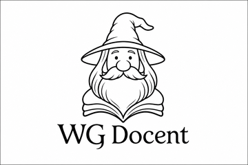

About the author
WG Docent
WG Docent writes illustrated fiction for readers who like their wonder understated and their humor dry.
The pen name comes from a love of storytelling and teaching — the kind of guide who shows up with a floppy hat, a long beard, and an unreasonable confidence that the next question will be interesting.
Silas and the Wizard is the first novel published under this name: a black-line world of friendship, stubborn animals, and small miracles that feel entirely plausible once you have met the characters.
When not writing, WG Docent can be found revising illustrations, arguing with cats, and pretending that publishing timelines are entirely under control.

Literary logo used for book promos, About pages, and press.